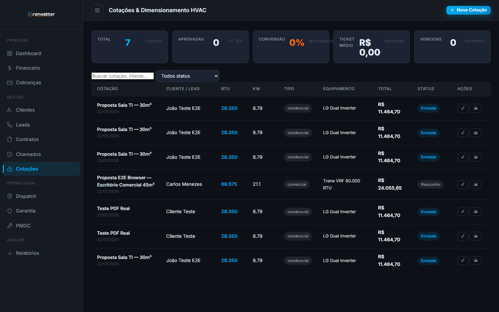
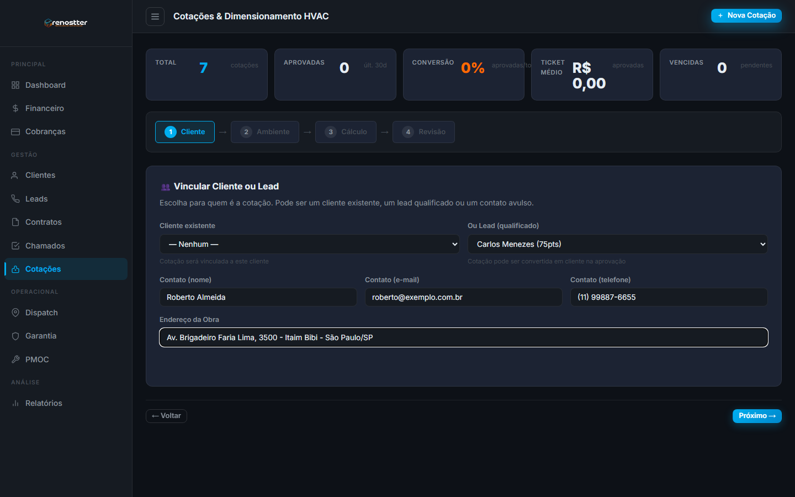
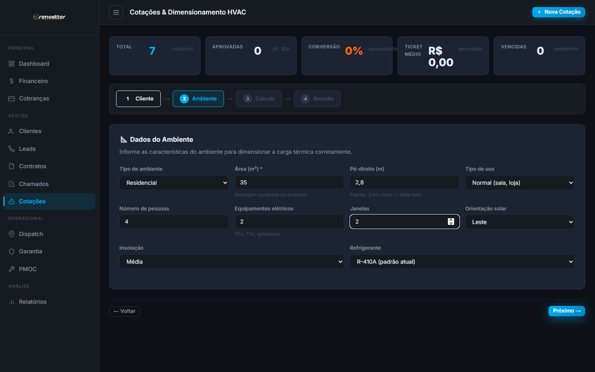
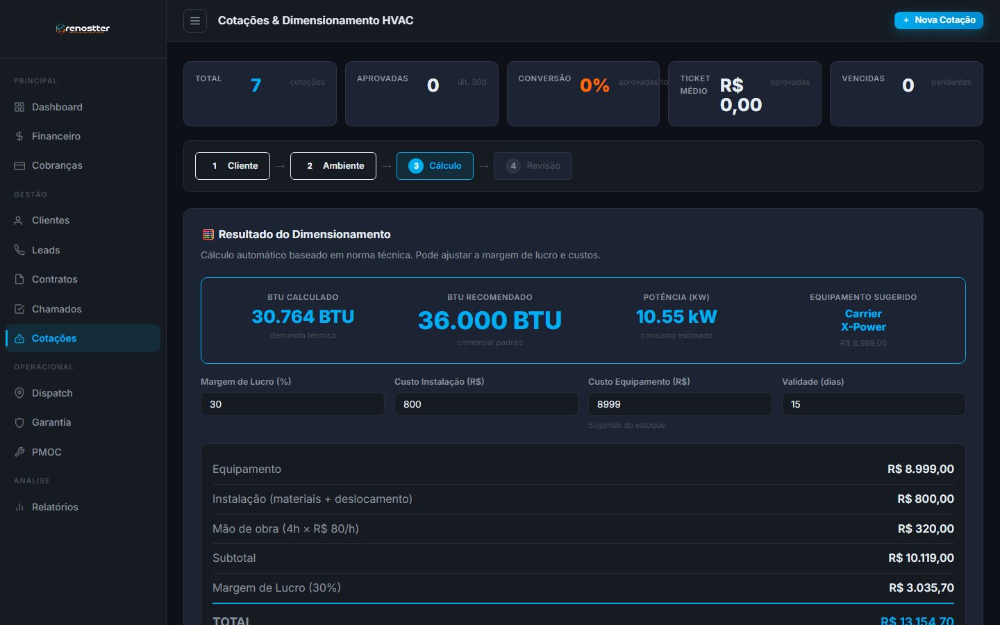
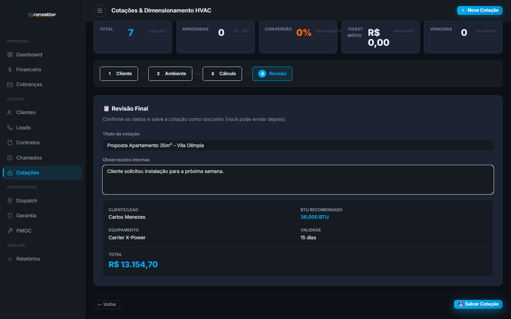
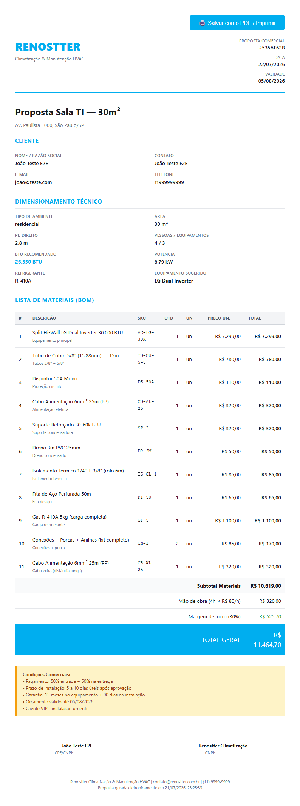

1Visão geral
O módulo de Cotação & Dimensionamento HVAC permite que a Renostter crie propostas comerciais profissionais para clientes a partir de um dimensionamento técnico automático da carga térmica do ambiente.
Por que existe
Antes deste módulo, o cálculo de BTU era manual (planilha + calculadora) e a lista de materiais era copiada de uma proposta anterior — sujeito a erro e retrabalho. Agora, com 8 fatores técnicos + catálogo de equipamentos + BOM automático, o vendedor preenche um wizard de 4 passos e sai com:
- BTU calculado com norma técnica (base 600 BTU/m² para residencial, 700 comercial, 800 industrial, 1200 servidor, 1000 cozinha)
- Equipamento sugerido do estoque (com fallback hardcoded se não houver)
- Lista de materiais (BOM) com 11 itens típicos para BTU 30k
- Precificação com margem de lucro editável (padrão 30%)
- PDF profissional pronto para enviar ao cliente
Quem usa
- Vendedor / SDR — recebe lead qualificado, visita cliente, mede ambiente, gera cotação
- Engenheiro / Técnico — revisa cálculo, ajusta margem, valida BOM
- Gerente comercial — acompanha funil de vendas (Leads → Cotações → Receita) pelo BI
Como se encaixa no sistema
• Leads — cotação pode ser vinculada a um lead qualificado e, na aprovação, o lead vira cliente automaticamente.
• Estoque (inventory) — 24 itens HVAC já populados (8 equipamentos + 16 materiais); você pode adicionar mais.
• BI Dashboard — cotações alimentam KPIs e gráficos de "Pipeline Cotações", "Mix de Equipamentos", "Funil de Vendas".
• Cobrança (Cora) — após aprovação, você pode gerar contrato que vira cobrança recorrente.
2Acesso rápido
Para abrir o módulo, três caminhos:
- Sidebar → menu Operacional → Cotações
- Dashboard → botão BI no topo (para ver os números agregados) ou Cotações na sidebar
- URL direta:
http://localhost:3000/crm/admin/cotacoes.html

3Conceitos fundamentais
3.1 O que é uma cotação
Uma cotação é uma proposta comercial que combina 3 elementos:
| Elemento | O que é | Exemplo |
|---|---|---|
| Dimensionamento | Cálculo técnico da carga térmica (BTU) do ambiente | 30.000 BTU para sala comercial 45m² |
| Equipamento | Aparelho de ar-condicionado que atende a carga | LG Dual Inverter 30.000 BTU |
| BOM (Bill of Materials) | Lista de materiais necessários para instalar | 1 condensadora + 10m de tubo + disjuntor + … |
3.2 Status de uma cotação
| Status | Quando | Pode avançar para |
|---|---|---|
| Rascunho | Criada mas ainda não enviada | Enviada (botão ✓ na lista) |
| Enviada | PDF foi enviado ao cliente | Aprovada ou Rejeitada |
| Aprovada | Cliente aceitou, instalação agendada | Convertida (quando vira contrato) |
| Rejeitada | Cliente recusou | (final) |
| Convertida | Virou contrato recorrente (RMR) | (final) |
| Vencida | Validade (15 dias padrão) passou sem ação | (reativável para Enviada) |
3.3 O que é BTU
BTU/h (British Thermal Unit por hora) é a unidade que mede a capacidade de refrigeração. Quanto mais BTU, mais potente o aparelho. Para referência:
- 7k BTU → dormitório pequeno (~10m²)
- 12k BTU → quarto (~15m²)
- 18k BTU → sala (~25m²)
- 24k BTU → sala grande ou escritório (~35m²)
- 30k BTU → dois ambientes ou comércio (~45m²)
- 36k BTU+ → industrial, restaurante, salão
BTU ≈ 600 × m² para residencial. Um erro comum é super-dimensionar (aparelho grande demais = ciclo curto, desumidifica mal e gasta mais energia). A engine aqui usa 8 fatores técnicos, não só área.
4Wizard passo a passo
O fluxo de criação é um wizard de 4 etapas. Cada etapa tem validação; você não consegue avançar com dados incompletos.
4.1 Etapa 1 — Cliente/Lead

Como preencher
- Selecione um cliente (se já é cliente Renostter) ou um lead qualificado — o sistema preenche contato e e-mail automaticamente.
- Se não houver, preencha manualmente: nome do responsável, e-mail, telefone, endereço completo da obra.
- Clique Próximo → para ir à Etapa 2.
Quando uma cotação é aprovada a partir de um lead, o sistema automaticamente: (1) muda o status do lead para ganho, (2) cria um cliente com os dados do lead, e (3) vincula a cotação ao novo cliente. Se você criar cotação avulsa, perde esse fluxo automatizado.
4.2 Etapa 2 — Ambiente (cálculo técnico)

Campos obrigatórios
| Campo | Obrigatório | Exemplo / observações |
|---|---|---|
| Tipo de ambiente | sim | residencial / comercial / industrial / servidor / cozinha |
| Área (m²) | sim | 35 (a área real do cômodo) |
| Pé-direito (m) | não | padrão 2.8m. Use 3.0+ para galpões |
| Tipo de uso | não | leve (dormitório) / normal (sala) / intensivo (academia) |
| Nº de pessoas | não | cada pessoa adiciona ~600 BTU |
| Equipamentos elétricos | não | PCs, TVs, geladeiras (cada um ~400 BTU) |
| Janelas | não | cada janela grande adiciona ~800 BTU |
| Orientação solar | não | sul é melhor (menos sol), oeste é pior |
| Insolação | não | fraca / média / forte (variação de 1.0× a 1.20×) |
| Refrigerante | não | R-410A (padrão), R-32 (ecológico), R-22 (legado) |
4.3 Etapa 3 — Cálculo (preview editável)

O que aparece
- BTU Calculado — a soma exata dos 8 fatores
- BTU Recomendado — arredondado para o próximo BTU comercial padronizado (ex: 26.350 → 30.000)
- Potência (kW) — consumo estimado (1 kW = 3.412 BTU/h)
- Equipamento Sugerido — o aparelho mais próximo ≥ BTU no estoque (ou fallback se não houver)
- Breakdown de custo — equipamento + instalação + mão-de-obra + margem = total
Campos editáveis nesta etapa
- Margem de Lucro (%) — padrão 30%. Use 20% para concorrências, 40% para clientes premium
- Custo Instalação (R$) — padrão R$ 800. Aumenta se a obra for longe ou tiver andaime
- Custo Equipamento (R$) — pré-preenchido com o do estoque. Edite se houver negociação com fornecedor
- Validade (dias) — padrão 15. Propostas maiores (corporativo) podem usar 30
Cada alteração em qualquer campo dispara um autoCalcular (debounce 300ms) que reconsulta a engine. Você vê o impacto imediatamente no breakdown.
4.4 Etapa 4 — Revisão e salvar

Antes de salvar
- Defina um título descritivo (ex: "Proposta Apartamento 35m² - Vila Olímpia"). Aparece no PDF e na lista.
- Adicione observações internas — não vai pro PDF, mas ajuda a equipe a entender o contexto.
- Revise o resumo abaixo (gerado automaticamente).
- Clique 💾 Salvar Cotação para gravar como rascunho.
4.5 Entendendo o cálculo BTU (8 fatores)
A engine usa norma técnica similar à ABNT NBR 16401, com 8 fatores multiplicativos e aditivos:
BTU = (área_m² × fator_base)
× fator_pe_direito
× fator_insolação
× fator_orientação_solar
+ (pessoas × 600)
+ (equipamentos × 400)
+ (janelas × 800)
× fator_usoTabela de fatores base por tipo de ambiente
| Tipo | BTU/m² base | Quando usar |
|---|---|---|
| Residencial | 600 | Casas, apartamentos, dormitórios |
| Comercial | 700 | Lojas, escritórios, consultórios |
| Industrial | 800 | Galpões, fábricas, oficinas |
| Servidor | 1200 | Data centers, CPD, racks |
| Cozinha | 1000 | Cozinha industrial, restaurantes |
Multiplicadores
| Fator | Valor | Quando |
|---|---|---|
| Pé-direito ≤ 2.5m | 1.00 | teto padrão residencial |
| Pé-direito 2.5–3.0m | 1.05 | teto um pouco mais alto |
| Pé-direito 3.0–3.5m | 1.10 | pé-direito alto (salas comerciais) |
| Pé-direito 3.5–4.0m | 1.15 | galpões pequenos |
| Pé-direito > 4.0m | 1.20 | galpões industriais |
| Insolação nenhuma | 1.00 | sem janelas (raro) |
| Insolação fraca | 1.05 | janelas pequenas ou sombreadas |
| Insolação média | 1.10 | sol de meio período |
| Insolação forte | 1.20 | sol direto o dia todo |
| Orientação sul | 1.00 | menos sol (melhor) |
| Orientação leste | 1.05 | sol da manhã |
| Orientação norte | 1.10 | sol constante |
| Orientação oeste | 1.15 | sol da tarde (pior) |
| Uso leve | 0.85 | dormitório, home office |
| Uso normal | 1.00 | sala, loja |
| Uso intensivo | 1.20 | academia, cozinha, salão |
4.6 Entendendo o BOM automático
O BOM (Bill of Materials) é a lista de materiais + acessórios necessários para instalar o equipamento. É gerado automaticamente baseado no BTU recomendado.
Lógica de seleção (por faixa de BTU)
| Item | BTU ≤ 18k | 18k < BTU < 30k | BTU ≥ 30k |
|---|---|---|---|
| Tubos de cobre | 1/4" + 3/8" | 1/4" + 1/2" | 3/8" + 5/8" |
| Disjuntor | 30A (DS-30A) | 30A (DS-30A) | 50A (DS-50A) |
| Cabo de alimentação | 4mm² 15m (CB-AL-15) | 6mm² 25m (CB-AL-25) | 6mm² 25m (CB-AL-25) + extra |
| Suporte condensadora | 9-24k (SP-1-4) | 9-24k (SP-1-4) | 30-60k (SP-2) |
| Gás refrigerante | R-410A 2kg (GF-2) | R-410A 5kg (GF-5) | R-410A 5kg (GF-5) |
Itens fixos do BOM (independem do BTU)
- Dreno PVC 3m (DR-3M) — para coletor de condensado
- Isolamento térmico 1/4"+3/8" (IS-CL-1) — para os tubos
- Fita de aço perfurada 50m (FT-50) — para fixação
- Conexões + porcas + anilhas (CN-1) — kit, sempre 2 unidades
Exemplo: cotação 30k BTU
| # | Tipo | Item | Qtd | Unit. | Total |
|---|---|---|---|---|---|
| 1 | equipamento | LG Dual Inverter 30.000 BTU | 1 | R$ 7.299,00 | R$ 7.299,00 |
| 2 | material | Tubo de Cobre 5/8" | 1 | R$ 780,00 | R$ 780,00 |
| 3 | material | Disjuntor 50A | 1 | R$ 110,00 | R$ 110,00 |
| 4 | material | Cabo 6mm² 25m (PP) | 1 | R$ 320,00 | R$ 320,00 |
| 5 | material | Suporte Reforçado 30-60k | 1 | R$ 320,00 | R$ 320,00 |
| 6 | material | Dreno PVC 3m | 1 | R$ 50,00 | R$ 50,00 |
| 7 | material | Isolamento Térmico 1/4"+3/8" | 1 | R$ 85,00 | R$ 85,00 |
| 8 | material | Fita de Aço 50m | 1 | R$ 65,00 | R$ 65,00 |
| 9 | material | Gás R-410A 5kg | 1 | R$ 1.100,00 | R$ 1.100,00 |
| 10 | material | Conexões + Porcas | 2 | R$ 85,00 | R$ 170,00 |
| 11 | material | Cabo 6mm² 25m extra (>30k) | 1 | R$ 320,00 | R$ 320,00 |
| Subtotal Materiais | R$ 10.619,00 | ||||
4.7 PDF da proposta
Ao salvar, a cotação tem um PDF pronto para enviar. Para gerar:
- Na lista de cotações, localize a cotação salva
- Use a URL da API:
http://localhost:3000/api/cotacoes/<id>/pdf?format=pdf - O navegador abre o PDF inline (ou faz download se você adicionar
&download=1)

Como o PDF é gerado (por curiosidade)
O backend gera HTML com CSS print-friendly, depois usa Playwright/Chromium para renderizar esse HTML como PDF binário (formato A4, margens 15mm, com cores). Se o Chromium falhar, faz fallback para o HTML puro (que pode ser salvo como PDF pelo próprio browser via Ctrl+P).
?format=pdf (default) → PDF binário.
?format=html → HTML print-friendly (fallback).
5Workflow típico
Da chegada do lead à aprovação da cotação:
- Lead chega (whatsapp, site, indicação) — alguém cria no módulo Leads com pontuação inicial
- Qualificação — SDR faz contato, preenche dados, sistema calcula score. Lead com score ≥ 60 vira qualificado
- Vendedor visita cliente — mede ambiente, anota características (área, pé-direito, janelas, orientação solar)
- Cria cotação — abre o wizard, vincula o lead (auto-preenche contato), preenche dados técnicos, revisa cálculo, salva como rascunho
- Envia ao cliente — baixa o PDF ou usa a URL, manda por e-mail/whatsapp. Marca como enviada na lista (botão ✓)
- Cliente aprova — clica no botão aprovar na lista. Se veio de um lead, o sistema cria cliente automaticamente
- Gera contrato — botão "Gerar Contrato" cria um contrato recorrente (RMR) que vira cobrança mensal via Cora
O BI Dashboard (admin/bi.html) tem um card Funil de Vendas com 5 etapas: Leads Captados → Qualificados → Cotações Criadas → Aprovadas/Convertidas → Pipeline Aprovado. Acompanhe em tempo real.
6Boas práticas
✅ Faça
- Sempre vincule a um lead qualificado — automatiza a conversão para cliente na aprovação
- Meça a área real do ambiente — não estime. Use trena. Erro de 5m² = 3.000 BTU de diferença
- Conte janelas voltadas para o sol — uma janela grande a oeste vale muito mais que duas voltadas ao sul
- Use títulos descritivos — "Proposta Sala 35m² - Vila Olímpia" é melhor que "Cotação 1"
- Revise a margem para cada caso — 20% em concorrência grande, 35-40% em cliente premium
- Salve como rascunho primeiro, envie depois — evita que o cliente receba versão inacabada
- Mantenha o estoque atualizado — adicione novos SKUs no inventário para o sistema sugerir corretamente
❌ Evite
- Não super-dimensione — aparelho grande demais gasta mais energia e desumidifica mal
- Não envie cotação sem medir a insolação — é o fator que mais impacta depois da área
- Não ignore o tipo de uso — academia precisa de 20% a mais que escritório
- Não use "Outro" como pretexto — se o ambiente não se encaixa, escolha o tipo mais próximo e anote na observação
- Não edite BTU manualmente — se precisa de mais potência, ajuste os fatores de entrada (área, janelas, etc.)
7Troubleshooting
Problema: "Selecione um cliente ou lead" mesmo após selecionar
Causa: O lead não está com status qualificado, proposta ou negociacao. O filtro do select só mostra leads nessas fases.
Solução: Vá em Leads e atualize o status do lead (geralmente: pontuação ≥ 60 → qualificado).
Problema: BTU recomendado está muito acima do necessário
Causa: Algum fator foi inflado (área muito grande, muitas janelas, pé-direito alto).
Solução: Revise os 8 fatores no Step 2. Lembre-se que a engine arredonda para o próximo BTU comercial padronizado — se der 30k, é porque o cálculo ficou entre 25k e 30k.
Problema: Equipamento sugerido mostra "Nenhum compatível no estoque"
Causa: O estoque não tem nenhum equipamento ≥ BTU calculado.
Solução: (1) Adicione o equipamento no módulo Estoque com a potência correta, ou (2) Crie a cotação mesmo assim e edite o equipamento manualmente na etapa de revisão.
Problema: PDF demora muito para abrir (>10 segundos)
Causa: O Chromium do Playwright está cold-start (primeira vez).
Solução: As próximas requisições são rápidas (cache do processo). Se persistir, reinicie o servidor.
Problema: BOM aparece vazio na lista de materiais
Causa provável: Erro ao persistir itens (constraint FK). Veja logs do servidor em cora-api/server-err.log.
Solução: Abra a cotação pelo ID e clique em Regenerar BOM (botão de ação na lista) ou recrie a cotação.
Problema: CORS error no browser (Failed to fetch)
Causa: Sua origem não está no CRM_FRONTEND_URL do .env.
Solução: Adicione a origem (ex: http://localhost:5500) no .env e reinicie o servidor.
8FAQ
O cálculo de BTU é certificado?
Não é certificação formal, mas usa a mesma lógica de norma técnica da ABNT NBR 16401 com 8 fatores. Para laudo oficial com ART, use o resultado como ponto de partida e faça a visita técnica presencial.
Posso criar cotação sem cliente/lead?
Sim — basta preencher os campos de contato manualmente no Step 1. Mas perde a automação de conversão lead→cliente na aprovação.
Posso editar uma cotação depois de salvar?
Sim, use PUT /api/cotacoes/:id. Se você alterar dados técnicos (área, pessoas, etc.), o sistema recalcula BTU automaticamente.
E se eu precisar de um equipamento que não está no estoque?
Adicione no módulo Estoque (admin/inventory.html) com SKU, marca, modelo, potência em BTU, refrigerante e preço. O BOM passa a sugerir automaticamente.
Como funciona a margem de lucro na conversão lead→cliente?
A margem é só no preço final da proposta — não afeta a criação de cliente. A aprovação da cotação: (1) cria o cliente, (2) marca lead como ganho, (3) deixa a cotação como aprovada. Opcionalmente você pode gerar contrato recorrente depois.
Quantas cotações posso criar?
Ilimitado tecnicamente. No SQLite atual (single-file) performance fica lenta acima de ~10k. Para mais, faça a migração para Supabase Postgres.
Posso duplicar uma cotação existente?
Não pela UI ainda, mas via API sim: POST /api/cotacoes com os mesmos dados técnicos gera uma nova cotação com novo BOM.
Como cancelo uma cotação?
Não tem "cancelar" como status — você pode deletar (DELETE /api/cotacoes/:id) ou marcar como rejeitada (cliente recusou).
O PDF inclui o logo da Renostter automaticamente?
Sim — o cabeçalho do PDF tem o logo + nome + tagline "Climatização & Manutenção HVAC". Para trocar o logo, edite a constante logo na função gerarHTMLProposta() em server.js.
9API reference (resumo)
Todos os endpoints abaixo exigem que o servidor esteja rodando (node cora-api/server.js) e que sua origem esteja liberada no CORS.
POST /api/cotacoes/calcular
Calcula BTU + custos sem persistir. Use para preview no Step 3 do wizard.
POST /api/cotacoes/calcular
Content-Type: application/json
{
"ambiente_tipo": "comercial",
"area_m2": 45,
"pe_direito_m": 3.0,
"num_pessoas": 8,
"num_equipamentos_eletricos": 6,
"num_janelas": 3,
"orientacao_solar": "oeste",
"insolacao": "forte",
"tipo_uso": "intensivo",
"refrigerante": "R-32"
}Resposta 200: { success: true, data: { calculo, equipamento, custos } }
POST /api/cotacoes
Cria cotação + gera BOM automático + persiste tudo.
POST /api/cotacoes
Content-Type: application/json
{
"lead_id": "450a7f8e-...", // opcional, mas recomendado
"titulo": "Proposta Sala 45m²",
"contato_nome": "Carlos Menezes",
"contato_email": "carlos@exemplo.com",
"endereco_obra": "Av. Paulista 1000",
"ambiente_tipo": "comercial",
"area_m2": 45,
"pe_direito_m": 3.0,
"num_pessoas": 8,
"num_equipamentos_eletricos": 6,
"num_janelas": 3,
"orientacao_solar": "oeste",
"insolacao": "forte",
"tipo_uso": "intensivo",
"refrigerante": "R-32",
"custo_instalacao": 1200,
"margem_lucro_percent": 30,
"validade_dias": 15,
"status": "rascunho"
}Resposta 201: { success: true, data: { id, calculo, custos, equipamento_sugerido, bom } }
GET /api/cotacoes
Lista cotações com filtros opcionais.
GET /api/cotacoes?status=aprovada&limite=50
GET /api/cotacoes?cliente_id=<uuid>
GET /api/cotacoes?search=apartamentoGET /api/cotacoes/:id
Retorna detalhe completo + itens_json parseado + dados do cliente.
GET /api/cotacoes/:id/bom
Lista os itens do BOM com totais por categoria.
POST /api/cotacoes/:id/bom/regenerar
Apaga e recria o BOM com base no BTU atual. Útil se você editou o equipamento sugerido.
GET /api/cotacoes/:id/pdf?format=pdf
Retorna o PDF binário. ?format=html retorna HTML.
POST /api/cotacoes/:id/aprovar
Muda status para aprovada. Se houver lead_id, cria cliente automaticamente.
POST /api/cotacoes/:id/rejeitar
Muda status para rejeitada.
POST /api/cotacoes/:id/gerar-contrato
Cria um contrato recorrente (RMR) a partir da cotação aprovada.
GET /api/cotacoes/stats?since=30
KPIs agregados (alimenta o BI Dashboard).
{
"total": 7,
"total_valor": 92843.85,
"valor_aprovadas": 0,
"taxa_conversao": 0,
"ticket_medio_aprovado": 0,
"por_status": { "rascunho": 1, "enviada": 6 },
"vencidas": 0
}10Glossário
| Termo | Significado |
|---|---|
| BTU | British Thermal Unit. Unidade de capacidade de refrigeração. 1 BTU/h ≈ 0,293 W |
| TR | Tonelada de Refrigeração. 1 TR = 12.000 BTU/h. Usado em sistemas grandes |
| kW | Quilowatt. Unidade de potência. 1 kW = 3.412 BTU/h |
| Split | Tipo de ar-condicionado com unidade interna (evaporadora) + externa (condensadora) |
| Hi-Wall | Split de parede (mais comum em residencial) |
| Piso-Teto | Split instalado no chão ou teto (comercial) |
| VRF | Variable Refrigerant Flow. Sistema multi-split comercial/industrial |
| PMOC | Plano de Manutenção, Operação e Controle (obrigatório em ar-condicionado) |
| BOM | Bill of Materials — lista de materiais para fabricar/instalar |
| RMR | Receita Mensal Recorrente (Monthly Recurring Revenue) |
| CSDAT | Customer Satisfaction Score (0–10, baseado em feedback pós-atendimento) |
| SDR | Sales Development Representative — pré-vendas, qualifica leads |
| Lead | Potencial cliente (ainda não é cliente Renostter) |
| Funil de Vendas | Jornada: Lead → Qualificado → Cotação → Aprovada → Cliente |
• Arquitetura do ERP — visão técnica dos módulos
• Análise de Fluxo ERP — como Cotação encaixa no fluxo geral
• Roadmap Postgres — quando migrar para Supabase